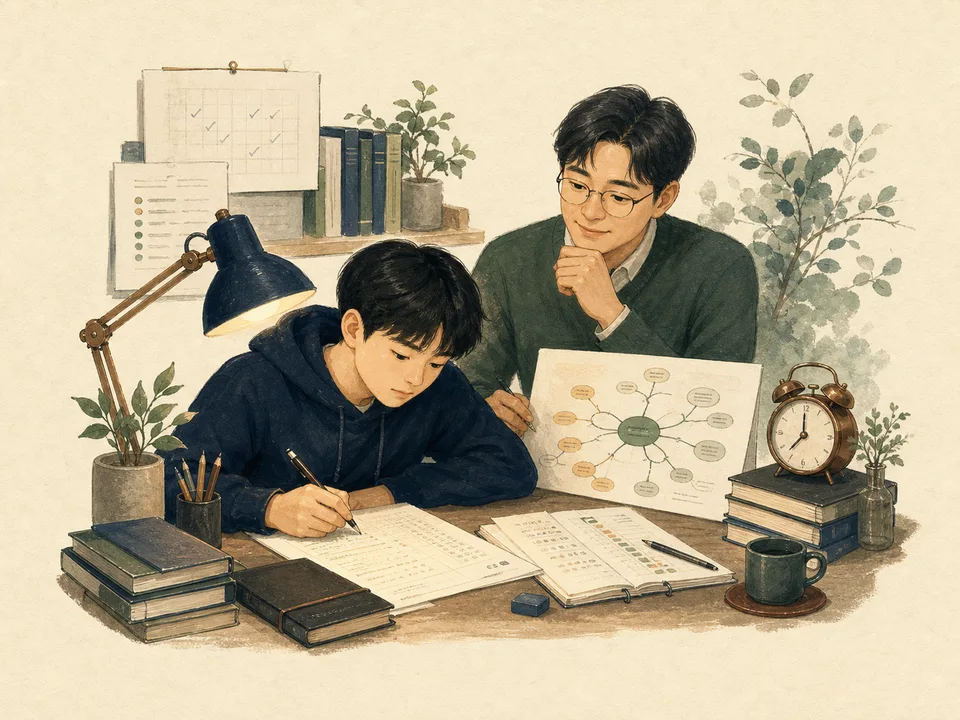

Pillar 01 · Expert Network
핵심노트 · 모의고사
교실 현장 · 전용 서비스임용고사교육과정 · 전공 · 예상문제imyong.gyo6.kr →

학습 분석 · 전용 서비스수능시험개념 · 유형 · 전국 모의고사suneung.gyo6.kr → 직렬별 · 전용 서비스공무원시험핵심노트 · 예상문제 · 학습 리포트0mu1.gyo6.kr →분석교육과정·기출·출제경향
설계핵심노트·예상문제·모의고사
검수사실·정답·표현 전수 확인
피드백결과 분석과 다음 학습 연결
경험이 좋은 자료가 됩니다.
집필·검수·자문 교육전문가 모집